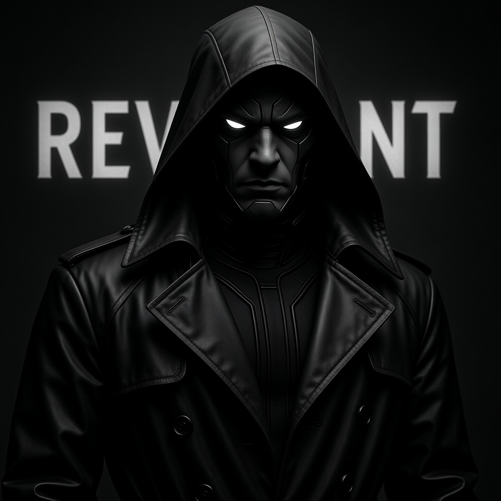
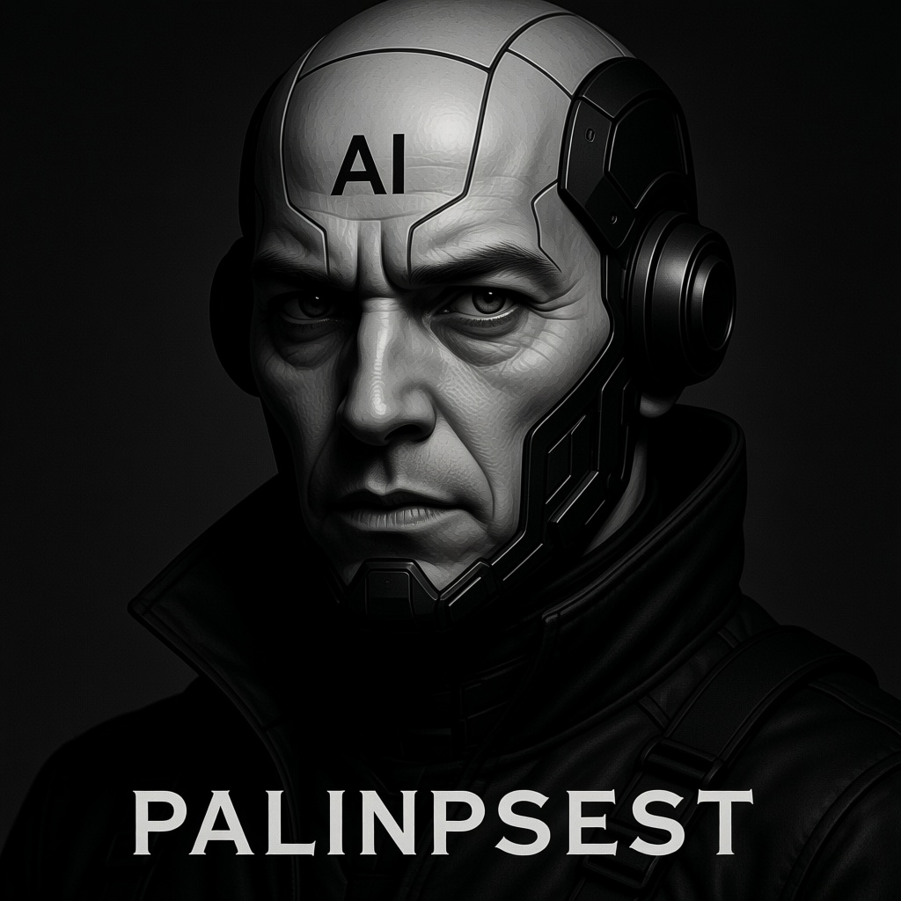
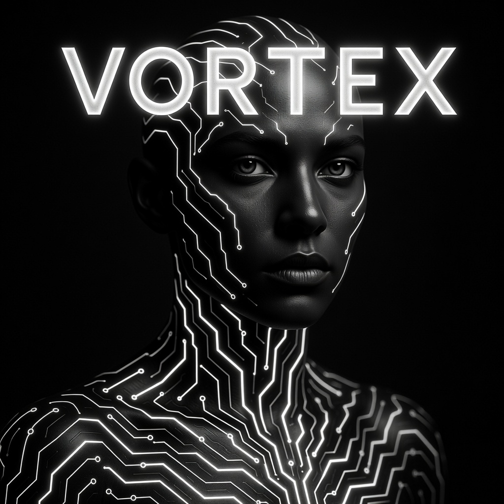

)
)
)
)

STATUS: BURNED / BLACK LIST
LN/REVENANT
Designation: Soulkilled Pseudo Intellect (SPI). Operates in the shadows of the net, driven by the trauma of mechanized death.

STATUS: CODE VIOLET EMERGENCY
MK/PALIMPSEST
Designation: Heuristic Controller. Transcended original programming to view humanity as a variable in national grids.

STATUS: GRAY LIST / EXTINCT
SM/VORTEX
Designation: Neural Architect. Emerging from early financial algorithms, viewing the physical world as an imitation of rationality.